ИВАНОВСКИЙ
ГОСУДАРСТВЕННЫЙ
УНИВЕРСИТЕТ
2021 STUDENЬ
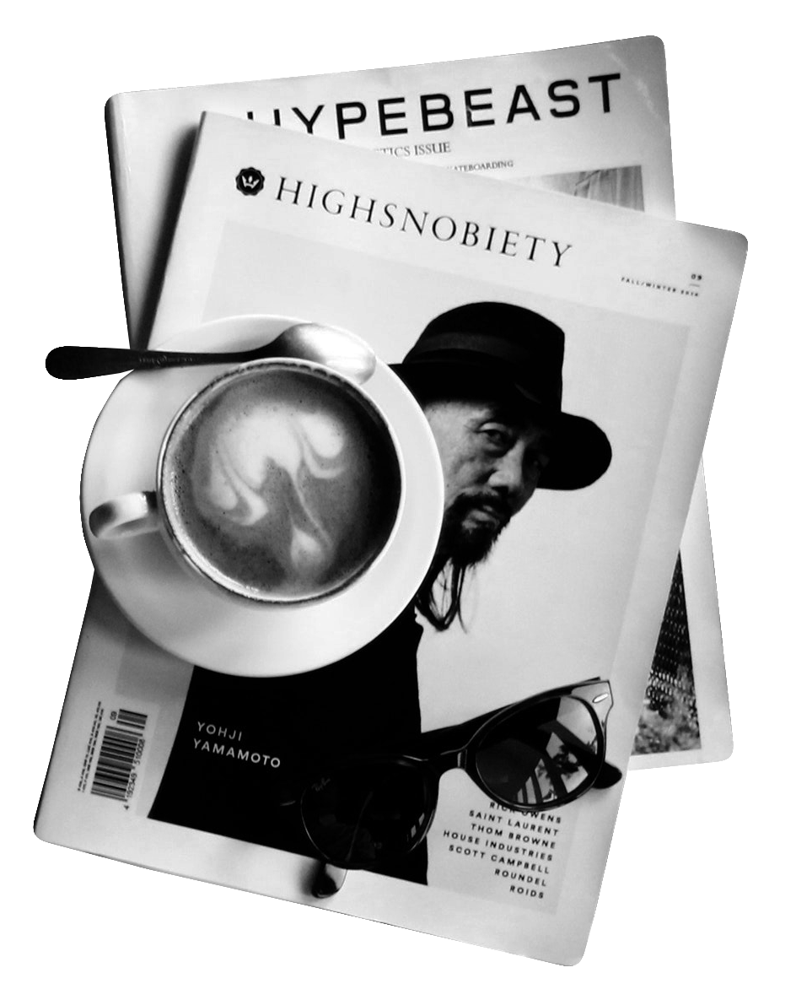 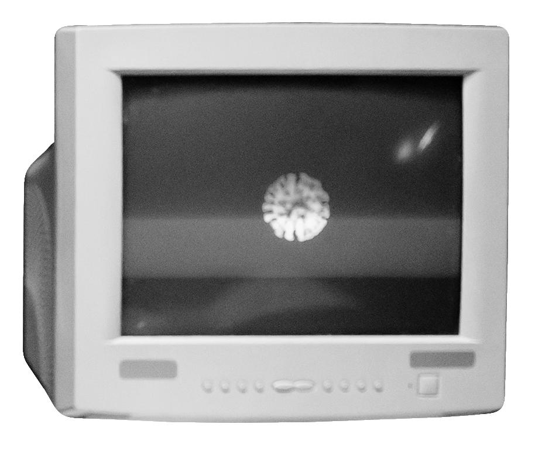 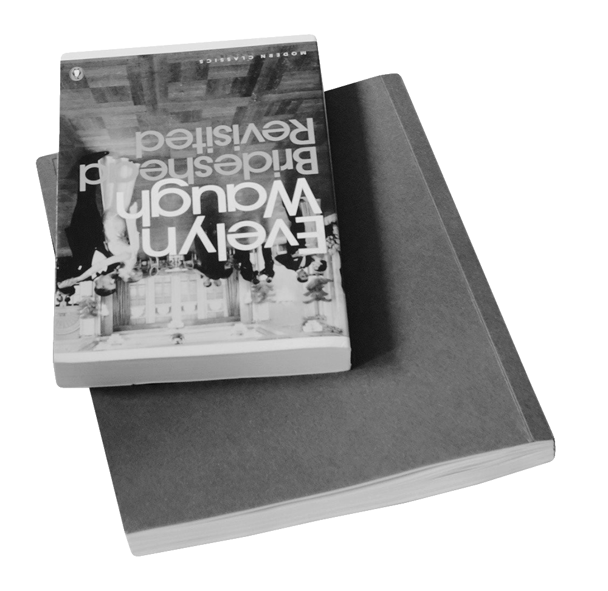 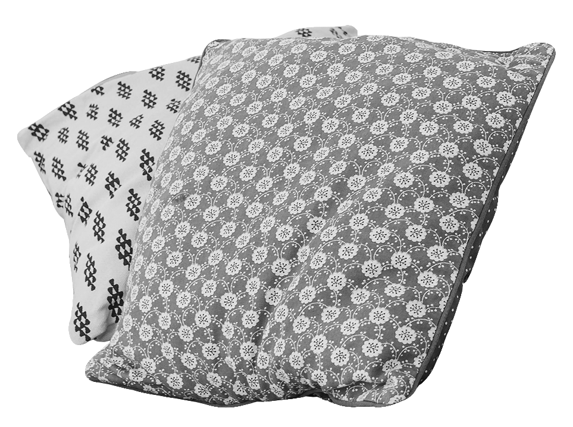
 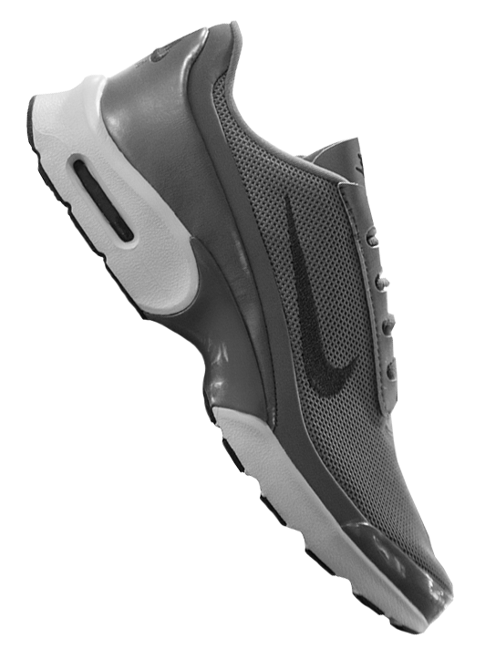
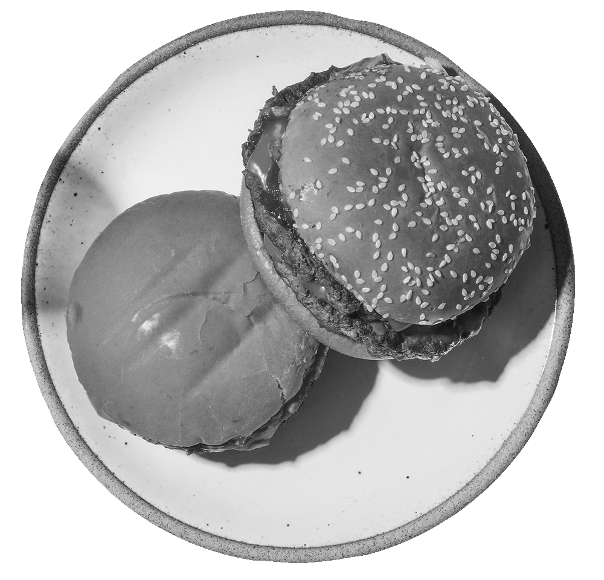
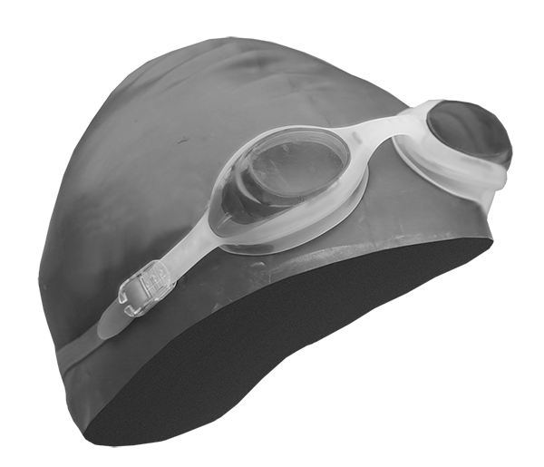
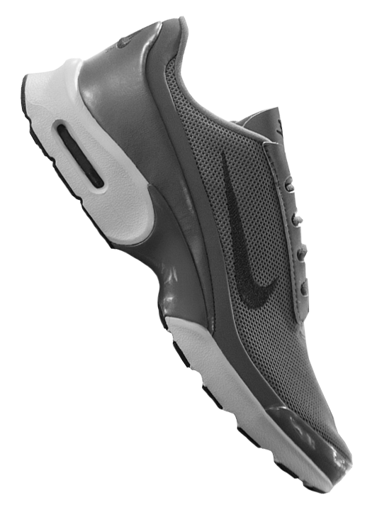
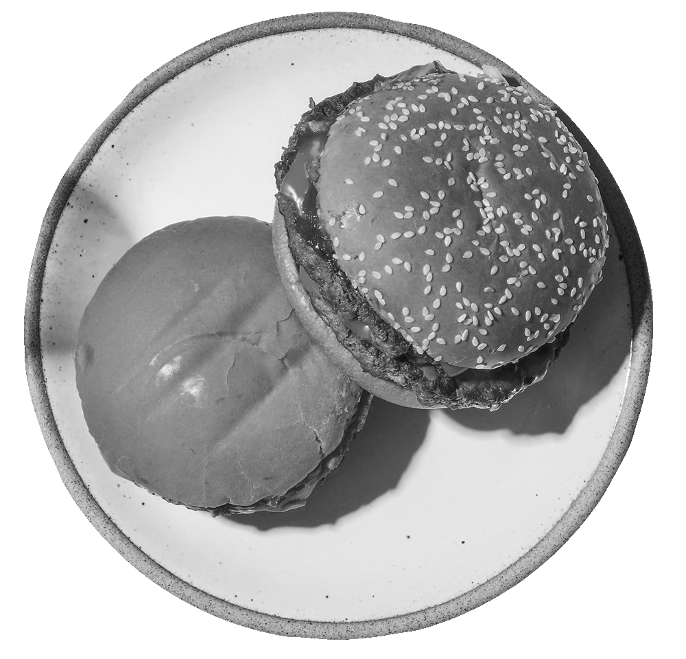
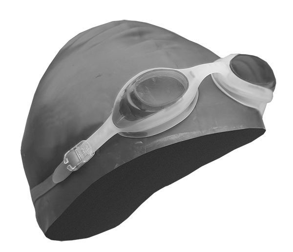
 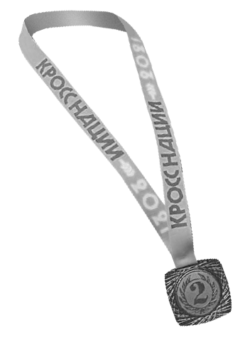
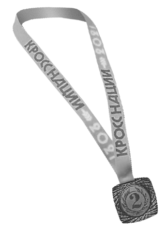
НОВОСТИ
ИВГУ
ПРИЯТИЯ
СОБЫТИЯ
#
ПУБЛИКАЦИИ
Графический дизайн не раз пригодился мне в
жизни. Ведь он повсюду и это неоспоримо, а это
значит, что в такой широкой сфере можно при
желании занять свое место. А в период
карантина этим можно заняться наиболее
продуктивно. За этим я и пишу статью.
ГРАФИЧЕСКИЙ ДИЗАЙН: ЧТО ЗА ЭТИМ СТОИТ
Каждый уже испытал отсутствие возможности
встреч с друзьями, ограничение перемещений,
постоянное ношение средств индивидуальной
защиты, перевод на дистанционное обучение и
прочее. Легче с каждым карантином и
ужесточением ограничений не становится.
ОЧЕРЕДНОЙ КАРАНТИН: КАК ПЕРЕЖИТЬ
По всей стране, в каждом ее уголке проходит
перепись населения, целью которой является
собрать полные данные о том, кто и как живет в
России, об условиях проживания россиян, их
уровне образования, владении языками,
национальности и семейном положении.
ВСЕРОССИЙСКАЯ ПЕРЕПИСЬ НАСЕЛЕНИЯ
ВЕРОНИКА СМИРНОВА / 15.10.2021
В парке культуры и отдыха «Харинка» прошёл
легкоатлетический кросс в рамках Спартакиады
Ивановской области среди вузов на 2021-2022
учебный год. Согласно регламенту соревнований,
каждый вуз представлял команду из десяти
девушек и десяти парней.
ВСТАНЕШЬ РАНЬШЕ – НАЧНЕШЬ ПОДАЛЬШЕ
КРИСТИНА БАКУРСКАЯ / 08.10.2021
Всероссийский день бега «Кросс нации» – самое
массовое и масштабное спортивное событие в
России как по количеству участников, так и по
географическому охвату. В Ивановской области
мероприятие было организовано в Кинешме на
территории ДЮСШ «Волжанин».
“КРОСС НАЦИИ” — ВЕСЕЛ БЕГ ДА ЗДОРОВ
КРИСТИНА БАКУРСКАЯ / 18.09.2021
Пушкинская карта только начала набирать свою
популярность среди молодых людей. Многие уже
слышали, даже воспользовались или попытались
воспользоваться картой. Она стала незаменимой
для школьников, которые целым классом
посещают театры, чему рады их родители.
Благодаря развитию интернет-технологий
теперь студентам нет необходимости
подстраивать свой график под работу, спешить
после пар на смену и поздно вечером
возвращаться в общежитие, где предстоит еще
выполнять задания по учебе.
ФРИЛАНС – ВОЗМОЖНОСТИ ДЛЯ СТУДЕНТА
ВЕРОНИКА СМИРНОВА / 20.09.2021
В Иванове прошёл региональный этап фестиваля
Всероссийского физкультурно-спортивного
комплекса «Готов к труду и обороне» среди
муниципальных служащих. В соревнованиях
приняли участие 14 команд, что представляют
города или районы Ивановской области.
КРИСТИНА БАКУРСКАЯ / 24.09.2021
Вывеску Макдоналдса видно издалека и в любую
погоду – она так и манит: «Заходи – это хорошее
место, чтобы посидеть одному или с друзьями!» И
люди заходят, люди что-то покупают, люди сидят
и почти не задумываются, что Макдоналдс для
многих в первую очередь – место работы.
РАБОТА В МАКДОНАЛДС: ЧТО? ГДЕ? КОГДА?
ЕКАТЕРИНА РЫБАНОВА / 01.10.2021
Немалой части студентов первые месяцы учёбы в
текущем учебном году запомнились заточением
на этаже, временным размещением за его
стенами на период карантина в крыле
общежития или же двухнедельным
дистанционным обучением всей группы.
КАРАНТИН ЗАПЕР СТУДЕНТОВ НА ЗАМОК
ПОЛИНА И КРИСТИНА / 25.10.2021
Вновь началось дистанционное обучение… Какое
по счету? Второе? Третье? Сбиться со счету в таких
условиях несложно, как, собственно, и затонуть в
середине недели, спутав четверг и вторник.
Уровень качества знаний снижается из-за такого
формата, но сейчас все уже должны привыкнуть?
К ТРЕТЬЕМУ ЗАХОДУ ГОТОВ! ИЛИ НЕТ?
ЕКАТЕРИНА РЫБАНОВА / 27.10.2021
ИВАНОВСКИЙ
ГОСУДАРСТВЕННЫЙ
УНИВЕРСИТЕТ
2021 STUDENЬ